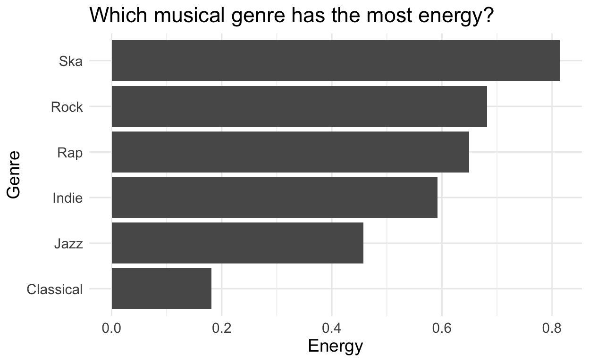
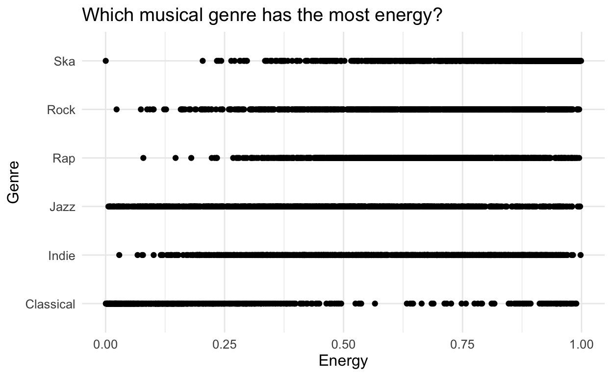

Welcome
In this case study, you will explore qualities of your favorite music genres. Along the way, you will master some of the most useful functions for isolating and summarizing variables, cases, and values within a data frame:
select()andfilter(), which let you extract columns and rows from a data framearrange(), which lets you reorder the rows in your datagroup_by(), which lets you group your data by a factorsummarize(), which lets you perform a function on your grouped data%>%, which organizes your code into reader-friendly “pipes”
This tutorial uses the core tidyverse packages, including ggplot2, tibble, and dplyr.
Click the Next Topic button to begin.
Music
Trends in your favorite music
You can use the provided spotify data to learn more about your favorite music genres. For instance, which of your favorite musical genres will pep you up the most?

But before you do, you will need to trim down spotify. At the moment, there are more rows in spotify than you need to build your plot.
An example
To see what I mean, consider how I made the plot above: I began with the entire data set, which if I plotted everything as a scatterplot would’ve looked like this. This is a big jumbled mess. It doesn’t tell me much about what I’m interested in.

I then narrowed the data to just the rows that contain my selected genres. Here’s how the rows with just the genres I’m interested in look as a scatterplot.

This tells me a little bit more about the data, but I’m really just interested in the average. This leads us back to my first plot, which shows the average energy for each genre.
Your goal in this section is to repeat this process for your own genres. Along the way, you will learn a set of functions that isolate and summarize information within a data set.
Isolating data
This type of task occurs often in Data Science: you need to extract data from a table before you can use it. You can do this task quickly with three functions that come in the dplyr package:
- select() - which extracts columns from a data frame
- filter() - which extracts rows from a data frame
- arrange() - which moves important rows to the top of a data frame
Each function takes a data frame or tibble as it’s first argument and returns a new data frame or tibble as its output.
select()
select() extracts columns of a data frame and returns the columns as a new data frame. To use select(), pass it the name of a data frame to extract columns from, and then the names of the columns to extract. The column names do not need to appear in quotation marks or be prefixed with a $; select() knows to find them in the data frame that you supply.
Exercise - select()
Use the example below to get a feel for select(). Can you extract just the genre column? How about the genre and energy columns? How about all of the columns except danceability?
select(spotify, loudness)# A tibble: 26,000 x 1
loudness
<dbl>
1 -8.51
2 -4.75
3 -6.09
4 -5.06
5 -5.10
6 -3.64
7 -5.94
8 -4.43
9 -4.47
10 -5.74
# … with 25,990 more rowsselect(spotify, genre)
select(spotify, genre, energy)
select(spotify, genre, energy, loudness, tempo)
select(spotify, -danceability)select() helpers
You can also use a series of helpers with select(). For example, if you place a minus sign before a column name, select() will return every column but that column. Can you predict how the minus sign will work here?
select(spotify, -c(genre, energy))The table below summarizes the other select() helpers that are available in dplyr. Study it, and then click “Continue” to test your understanding.
| Helper Function | Use | Example |
|---|---|---|
| - | Columns except | select(spotify, -loudness) |
| : | Columns between (inclusive) | select(spotify, loudness:danceability) |
| contains() | Columns that contains a string | select(spotify, contains("d")) |
| ends_with() | Columns that ends with a string | select(spotify, ends_with("y")) |
| matches() | Columns that matches a regex | select(spotify, matches("n")) |
| num_range() | Columns with a numerical suffix in the range | Not applicable with spotify |
| one_of() | Columns whose name appear in the given set | select(spotify, one_of(c("energy", "tempo"))) |
| starts_with() | Columns that starts with a string | select(spotify, starts_with("e")) |
select() quiz
Go further
The mutate() function is another highly useful tool for manipulating columns. While select() allows you to choose columns, mutate() enables you to change existing columns and add new columns. For instance, you’re able perform arithmetic on numeric columns or create a new column that is a combination of two existing columns. For a light introduction, check this out.
filter()
filter() extracts rows from a data frame and returns them as a new data frame. As with select(), the first argument of filter() should be a data frame to extract rows from. The arguments that follow should be logical tests; filter() will return every row for which the tests return TRUE.
filter in action
For example, the code chunk below returns every row with the genre “Alternative” in spotify.
filter(spotify, genre == "Alternative")## # A tibble: 1,000 x 5
## genre energy loudness tempo danceability
## <chr> <dbl> <dbl> <dbl> <dbl>
## 1 Alternative 0.647 -8.51 79.8 0.709
## 2 Alternative 0.735 -4.75 163. 0.436
## 3 Alternative 0.917 -6.09 141. 0.544
## 4 Alternative 0.606 -5.06 93.1 0.603
## 5 Alternative 0.641 -5.10 142. 0.487
## 6 Alternative 0.973 -3.64 126. 0.524
## 7 Alternative 0.919 -5.94 108. 0.657
## 8 Alternative 0.889 -4.43 132. 0.611
## 9 Alternative 0.761 -4.47 119. 0.675
## 10 Alternative 0.611 -5.74 79.6 0.584
## # … with 990 more rowsLogical tests
To get the most from filter, you will need to know how to use R’s logical test operators, which are summarised below.
| Logical operator | tests | Example |
|---|---|---|
| > | Is x greater than y? |
x > y |
| >= | Is x greater than or equal to y? |
x >= y |
| < | Is x less than y? |
x < y |
| <= | Is x less than or equal to y? |
x <= y |
| == | Is x equal to y? |
x == y |
| != | Is x not equal to y? |
x != y |
| is.na() | Is x an NA? |
is.na(x) |
| !is.na() | Is x not an NA? |
!is.na(x) |
Exercise - Logical Operators
See if you can use the logical operators to manipulate our code below to show:
- All of the songs where tempo is less than or equal to 80
- All of the songs in the “Rap” genre
- All of the names that have a missing value for
energy(Hint: this should return an empty data set).
filter(spotify, genre == "Ska")filter(spotify, tempo <= 80)
filter(spotify, genre == "Rap")
filter(spotify, is.na(energy))Two common mistakes
When you use logical tests, be sure to look out for two common mistakes. One appears in each code chunk below. Can you find them? When you spot a mistake, fix it and then run the chunk to confirm that it works.
filter(spotify, genre = "Ska")## # A tibble: 1,000 x 5
## genre energy loudness tempo danceability
## <chr> <dbl> <dbl> <dbl> <dbl>
## 1 Ska 0.97 -4.80 118. 0.419
## 2 Ska 0.935 -4.16 95.5 0.436
## 3 Ska 0.988 -5.63 168. 0.452
## 4 Ska 0.95 -4.49 111. 0.435
## 5 Ska 0.994 -6.18 98.7 0.48
## 6 Ska 0.949 -4.04 167. 0.529
## 7 Ska 0.973 -3.22 105. 0.27
## 8 Ska 0.966 -4.66 98.8 0.473
## 9 Ska 0.588 -8.43 87.7 0.841
## 10 Ska 0.703 -11.4 136. 0.679
## # … with 990 more rows## [1] "Good Job! Remember to use == instead of = when testing for equality."filter(spotify, genre == Ska)## # A tibble: 1,000 x 5
## genre energy loudness tempo danceability
## <chr> <dbl> <dbl> <dbl> <dbl>
## 1 Ska 0.97 -4.80 118. 0.419
## 2 Ska 0.935 -4.16 95.5 0.436
## 3 Ska 0.988 -5.63 168. 0.452
## 4 Ska 0.95 -4.49 111. 0.435
## 5 Ska 0.994 -6.18 98.7 0.48
## 6 Ska 0.949 -4.04 167. 0.529
## 7 Ska 0.973 -3.22 105. 0.27
## 8 Ska 0.966 -4.66 98.8 0.473
## 9 Ska 0.588 -8.43 87.7 0.841
## 10 Ska 0.703 -11.4 136. 0.679
## # … with 990 more rows## [1] "Good Job! As written this code would check that name is equal to the contents of the object named Ska, which does not exist."Two mistakes - Recap
When you use logical tests, be sure to look out for these two common mistakes:
- using
=instead of==to test for equality. - forgetting to use quotation marks when comparing strings, e.g.
genre == Ska, instead ofgenre == "Ska"
Combining tests
If you provide more than one test to filter(), filter() will combine the tests with an and statement (&): it will only return the rows that satisfy all of the tests.
To combine multiple tests in a different way, use R’s Boolean operators. For example, the code below will return all of the songs in the Ska or Rock genres.
filter(spotify, genre == "Ska" | genre == "Rock")## # A tibble: 2,000 x 5
## genre energy loudness tempo danceability
## <chr> <dbl> <dbl> <dbl> <dbl>
## 1 Rock 0.65 -12.7 126. 0.739
## 2 Rock 0.701 -9.33 137. 0.778
## 3 Rock 0.264 -16.3 137. 0.409
## 4 Rock 0.737 -6.79 93.0 0.67
## 5 Rock 0.845 -3.94 78.0 0.469
## 6 Rock 0.879 -3.76 163. 0.478
## 7 Rock 0.385 -9.97 100.0 0.475
## 8 Rock 0.915 -9.64 160. 0.542
## 9 Rock 0.548 -8.32 110. 0.466
## 10 Rock 0.666 -5.87 120. 0.612
## # … with 1,990 more rowsBoolean operators
You can find a complete list or base R’s boolean operators in the table below.
| Boolean operator | represents | Example |
|---|---|---|
| & | Are both A and B true? |
A & B |
| |
Are one or both of A and B true? |
A | B |
| ! | Is A not true? |
!A |
| xor() | Is one and only one of A and B true? |
xor(A, B) |
| %in% | Is x in the set of a, b, and c? |
x %in% c(a, b, c) |
| any() | Are any of A, B, or C true? |
any(A, B, C) |
| all() | Are all of A, B, or C true? |
all(A, B, C) |
Exercise - Combining tests
Use Boolean operators to alter the code chunk below to return only the rows that contain:
- Very loud rock songs- Rock songs with loudness greater than -3.0 decibles
- Radio-ready pop songs- Pop songs with a tempo between 100 and 130 BPM
- The ultimate party playlist- Only Dance, Electronic, and Hip-Hop songs
filter(spotify, genre == "Rap" | genre == "Classical")# A tibble: 2,000 x 5
genre energy loudness tempo danceability
<chr> <dbl> <dbl> <dbl> <dbl>
1 Classical 0.234 -21.7 110. 0.38
2 Classical 0.303 -10.9 135. 0.343
3 Classical 0.0285 -30.9 67.6 0.15
4 Classical 0.931 -4.12 170 0.313
5 Classical 0.0303 -27.8 95.9 0.22
6 Classical 0.104 -20.4 113. 0.469
7 Classical 0.64 -12.3 131. 0.598
8 Classical 0.163 -15.7 137. 0.46
9 Classical 0.0741 -24.6 100. 0.473
10 Classical 0.00188 -27.5 68.9 0.361
# … with 1,990 more rowsfilter(spotify, genre == "Rock", loudness > -3.0)
filter(spotify, tempo > 100, tempo < 130)
filter(spotify, tempo >= 100, tempo <= 130)
filter(spotify, genre %in% c("Dance", "Electronic", "Hip-Hop"))Two more common mistakes
Logical tests also invite two common mistakes that you should look out for. Each is displayed in a code chunk below, one produces an error and the other is needlessly verbose. Diagnose the chunks and then fix the code.
filter(spotify, 0.4 < energy < 0.7)## # A tibble: 9,516 x 5
## genre energy loudness tempo danceability
## <chr> <dbl> <dbl> <dbl> <dbl>
## 1 Alternative 0.647 -8.51 79.8 0.709
## 2 Alternative 0.606 -5.06 93.1 0.603
## 3 Alternative 0.641 -5.10 142. 0.487
## 4 Alternative 0.611 -5.74 79.6 0.584
## 5 Alternative 0.613 -9.66 120. 0.588
## 6 Alternative 0.646 -5.33 112. 0.492
## 7 Alternative 0.51 -7.69 166. 0.328
## 8 Alternative 0.446 -11.4 51.5 0.442
## 9 Alternative 0.605 -11.5 134. 0.698
## 10 Alternative 0.575 -11.8 91.0 0.555
## # … with 9,506 more rows## [1] "Good job! You cannot combine two logical tests in R without using a Boolean operator (or at least a comma between filter arguments)."filter(spotify, genre == "Alternative" | genre == "Indie" | genre == "Rock" | genre == "Ska")## # A tibble: 4,000 x 5
## genre energy loudness tempo danceability
## <chr> <dbl> <dbl> <dbl> <dbl>
## 1 Alternative 0.647 -8.51 79.8 0.709
## 2 Alternative 0.735 -4.75 163. 0.436
## 3 Alternative 0.917 -6.09 141. 0.544
## 4 Alternative 0.606 -5.06 93.1 0.603
## 5 Alternative 0.641 -5.10 142. 0.487
## 6 Alternative 0.973 -3.64 126. 0.524
## 7 Alternative 0.919 -5.94 108. 0.657
## 8 Alternative 0.889 -4.43 132. 0.611
## 9 Alternative 0.761 -4.47 119. 0.675
## 10 Alternative 0.611 -5.74 79.6 0.584
## # … with 3,990 more rows## [1] "Good job! Although the first code works, you should make your code more concise by collapsing multiple or statements into an %in% statement when possible."Two more common mistakes - Recap
When you combine multiple logical tests, be sure to look out for these two common mistakes:
- Collapsing multiple logical tests into a single test without using a boolean operator
- Using repeated
|instead of%in%, e.g.x == 1 | x == 2 | x == 3instead ofx %in% c(1, 2, 3)
Go further
The stringr package is very helpful for manipulating strings in R. It’s part of the core tidyverse set of packages, so it is easy to integrate into your data wrangling pipeline. It takes some of the pain away from forming your own regex expressions, but is flexible enough to accomodate complex cases. I use stringr regularly within filter() and mutate(). If you’re interested, check out this light introduction.
arrange()
arrange() returns all of the rows of a data frame reordered by the values of a column. As with select(), the first argument of arrange() should be a data frame and the remaining arguments should be the names of columns. If you give arrange() a single column name, it will return the rows of the data frame reordered so that the row with the lowest value in that column appears first, the row with the second lowest value appears second, and so on. If the column contains character strings, arrange() will place them in alphabetical order.
Exercise - arrange()
Use the code chunk below to arrange spotify by energy. Can you tell what the smallest value of energy is?
## # A tibble: 26,000 x 5
## genre energy loudness tempo danceability
## <chr> <dbl> <dbl> <dbl> <dbl>
## 1 Movie 0.000216 -9.09 211. 0.32
## 2 Ska 0.000267 -7.90 135. 0.414
## 3 Soundtrack 0.000273 -28.7 68.5 0.212
## 4 Classical 0.000528 -41.8 71.2 0.323
## 5 Classical 0.000707 -36.6 68.3 0.476
## 6 Classical 0.000795 -38.6 80.1 0.51
## 7 Soundtrack 0.00101 -43.0 66.4 0.243
## 8 World 0.00104 -28.3 69.9 0.538
## 9 Opera 0.00106 -39.9 78.6 0.11
## 10 Soundtrack 0.00118 -43.7 88.6 0.101
## # … with 25,990 more rows## [1] "Good job!"Tie breakers
If you supply additional column names, arrange() will use them as tie breakers to order rows that have identical values in the earlier columns. Add to the code below, to make energy a tie breaker. The result should first order rows by value of loudness and then reorder rows within each value of loudness by values of energy.
arrange(spotify, loudness)# A tibble: 26,000 x 5
genre energy loudness tempo danceability
<chr> <dbl> <dbl> <dbl> <dbl>
1 Classical 0.0017 -47.6 136. 0.155
2 Classical 0.00154 -44.1 67.1 0.266
3 Soundtrack 0.00118 -43.7 88.6 0.101
4 Opera 0.00281 -43.7 96.5 0.123
5 Classical 0.00281 -43.4 75.4 0.349
6 Classical 0.00209 -43.1 67.7 0.287
7 Classical 0.00171 -43.0 84.9 0.217
8 Soundtrack 0.00101 -43.0 66.4 0.243
9 Opera 0.00219 -43.0 182. 0.151
10 Classical 0.000528 -41.8 71.2 0.323
# … with 25,990 more rowsarrange(spotify, loudness, energy)desc
If you would rather arrange rows in the opposite order, i.e. from large values to small values, surround a column name with desc(). arrange() will reorder the rows based on the largest values to the smallest.
Add a desc() to the code below to display the loudest and least danceable song.
arrange(spotify, loudness, desc(danceability))# A tibble: 26,000 x 5
genre energy loudness tempo danceability
<chr> <dbl> <dbl> <dbl> <dbl>
1 Classical 0.0017 -47.6 136. 0.155
2 Classical 0.00154 -44.1 67.1 0.266
3 Soundtrack 0.00118 -43.7 88.6 0.101
4 Opera 0.00281 -43.7 96.5 0.123
5 Classical 0.00281 -43.4 75.4 0.349
6 Classical 0.00209 -43.1 67.7 0.287
7 Classical 0.00171 -43.0 84.9 0.217
8 Soundtrack 0.00101 -43.0 66.4 0.243
9 Opera 0.00219 -43.0 182. 0.151
10 Classical 0.000528 -41.8 71.2 0.323
# … with 25,990 more rowsarrange(spotify, desc(loudness), desc(danceability))Think you have it? Click Continue to test yourself.
arrange() quiz
If academia doesn’t work out, I want to open up a jazz club that a younger crowd would actually want to attend. It’s a much safer financial decision, I know. To do that, I want to feature jazz that’s danceable, high-energy, but not too loud (I don’t want to have to yell over the sax player to order a drink). In the code chunk below, use arrange() to make the row with the simultaneously largest value of danceability, largest value of energy, and lowest value of loudness appear at the top of the data set (in that order). I’ve filtered the dataset already to only include jazz songs. I’ve called this new dataset jazz.
jazz <- filter(spotify, genre == "Jazz")
arrange(jazz, desc(danceability))arrange(spotify, desc(danceability), desc(energy), loudness)On Friday nights I might want some louder songs, so partiers can hear us down the street. Now arrange spotify so that the most loud jazz songs are prioritized, followed by danceability and energy.
jazz <- filter(spotify, genre == "Jazz")arrange(spotify, desc(loudness), desc(danceability), desc(energy))"Yay for tinnitus!"%>%
Steps
Notice how each dplyr function takes a data frame as input and returns a data frame as output. This makes the functions easy to use in a step by step fashion. For example, you could:
- Filter
spotifyto just Rap songs - Select the
loudnessandenergycolumns from the result - Arrange those columns so that the loudest songs appear near the top.
loud_rap <- filter(spotify, genre == "Rap")
loud_rap <- select(loud_rap, loudness, energy)
loud_rap <- arrange(loud_rap, desc(loudness))
loud_rap## # A tibble: 1,000 x 2
## loudness energy
## <dbl> <dbl>
## 1 -0.957 0.906
## 2 -1.15 0.859
## 3 -1.30 0.981
## 4 -1.49 0.778
## 5 -1.61 0.924
## 6 -1.69 0.818
## 7 -2.13 0.731
## 8 -2.21 0.755
## 9 -2.33 0.958
## 10 -2.43 0.935
## # … with 990 more rowsRedundancy
The result shows us the loudest rap songs and their energy levels in our data set. But take a look at the code. Do you notice how we re-create loud_rap at each step so we will have something to pass to the next step? This is an inefficient way to write R code.
You could avoid creating loud_rap by nesting your functions inside of each other, but this creates code that is hard to read:
arrange(select(filter(spotify, genre == "Rap"), loudness, energy), desc(loudness))The dplyr package provides a third way to write sequences of functions: the pipe.
%>%
The pipe operator %>% performs an extremely simple task: it passes the result on its left into the first argument of the function on its right. Or put another way, x %>% f(y) is the same as f(x, y). This piece of code punctuation makes it easy to write and read series of functions that are applied in a step by step way. For example, we can use the pipe to rewrite our code above:
spotify %>%
filter(genre == "Rap") %>%
select(loudness, energy) %>%
arrange(desc(loudness))## # A tibble: 1,000 x 2
## loudness energy
## <dbl> <dbl>
## 1 -0.957 0.906
## 2 -1.15 0.859
## 3 -1.30 0.981
## 4 -1.49 0.778
## 5 -1.61 0.924
## 6 -1.69 0.818
## 7 -2.13 0.731
## 8 -2.21 0.755
## 9 -2.33 0.958
## 10 -2.43 0.935
## # … with 990 more rowsAs you read the code, pronounce %>% as “then”. You’ll notice that dplyr makes it easy to read pipes. Each function name is a verb, so our code resembles the statement, “Take spotify, then filter it by genre, then select the loudness and energy, then arrange the results by descending values of loudness.”
dplyr also makes it easy to write pipes. Each dplyr function returns a data frame that can be piped into another dplyr function, which will accept the data frame as its first argument. In fact, dplyr functions are written with pipes in mind: each function does one simple task. dplyr expects you to use pipes to combine these simple tasks to produce sophisticated results.
Exercise - Pipes
I’ll use pipes for the remainder of the tutorial, and I will expect you to as well. Let’s practice a little by writing a new pipe in the chunk below. The pipe should:
- Filter spotify to just the songs that are above 0.50 danceability
- Select the
tempoandenergycolumns - Arrange the results so that the fastest songs are near the top.
Try to write your pipe without copying and pasting the code from above.
## # A tibble: 16,727 x 2
## tempo energy
## <dbl> <dbl>
## 1 220. 0.748
## 2 220. 0.978
## 3 220. 0.356
## 4 212. 0.373
## 5 210. 0.19
## 6 210. 0.488
## 7 210. 0.954
## 8 210. 0.394
## 9 207. 0.342
## 10 207. 0.326
## # … with 16,717 more rows